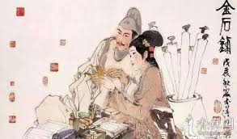
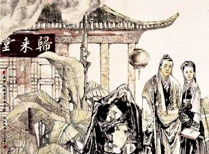

18岁时，她嫁给了21岁的太学生赵明诚。他们共同享受诗词歌赋的乐趣，过着简朴而幸福的生活。婚后两人情趣相投，志同道合，致力于收藏文物书画。赵氏夫妇每得一本奇书，便共同勘校，整理题签，互相给予评价。同时，夫妇二人在饭后还时常坐在归来堂中烹茶。两人指着满屋的书籍互相拷问对方，猜中的人先饮茶，以此为乐。
一次，赵明诚出外未归，李清照曾作《醉花阴》一词寄给丈夫告知自己的心情，赵明诚读后，赞叹不已，却又想胜之，便闭门谢客，废寝忘食三天，最后得词50首，中夹杂李清照的词。叫人评鉴，友人陆德夫品味后说：“只三句绝佳。”赵明诚忙问是哪三句，陆德夫回答后，赵明诚不禁哑然。原来正是李清照的“莫道不销魂，帘卷西风，人比黄花瘦”，赵明诚由此更钦佩妻子的才学。
然而，北宋时期的动荡给他们带来了巨大痛苦。1129年，命运的残酷让李清照失去了她深爱的赵明诚。他突发疟疾，终究未能挣脱疾病束缚，永远地离开了她。丈夫的离世让李清照失去心爱之人，突如其来的离别使她的心灵遭受了巨大创伤，诗词也再也无法回到过去的轻松与快乐。

在那个动荡不安的年代，李清照作为一个独身的女性，自然成为了众人关注的焦点。在这样的环境下，一个名叫张汝舟的男人出现在了她的生活中。根据有限的记载，张汝舟是一名武官，他以英俊的外表和能言善辩的口才吸引了李清照的心，她在孤独和迷茫中迅速沦陷于这位男子的追求之中。面对张汝舟的热情追求，她最终答应了这段婚姻。然而，等到他们成婚之后，李清照却发现这一切都只是一个骗局。
原来，张汝舟的婚姻图谋完全是出于对李清照藏品的贪婪，这一发现让李清照感到十分愤怒和无奈。张汝舟要让李清照将赵明诚的所有古董藏品都送给他，李清照不答应，他就动辄打骂。
他的欺骗和暴力让李清照饱受折磨，在这样的环境下，她仍然选择了勇敢地反抗。就这样，李清照身穿一袭月白长衣，在那个男子为尊的时代，带着万千女性的目光到了衙门口控诉张汝舟的残暴行径。李清照在那个封建的时代毅然地选择了离婚，并勇敢地申诉自己的权利，也让张汝舟受到了应有的惩罚。
根据当时的律法规定，丈夫受罚时妻子也会遭受牵连，但李清照并不在乎。她毫不犹豫地选择了告发张汝舟，并要求离婚。最终，经过审查查实，张汝舟被开除官籍。尽管李清照因此被判两年徒刑，但得到了朋友的帮助仅被关押了九天便获释。